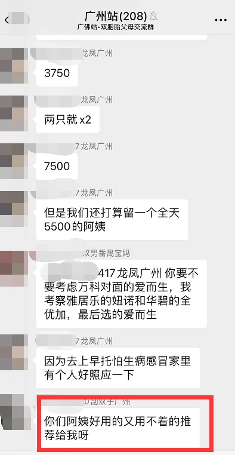
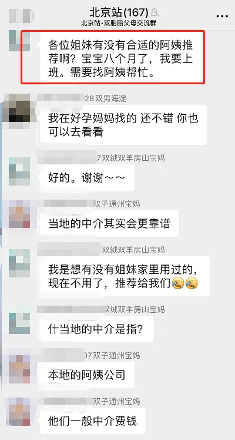
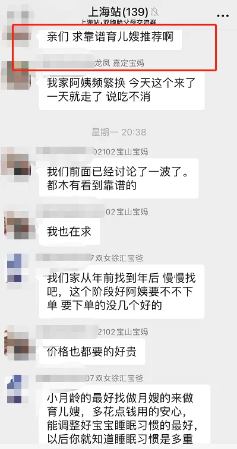
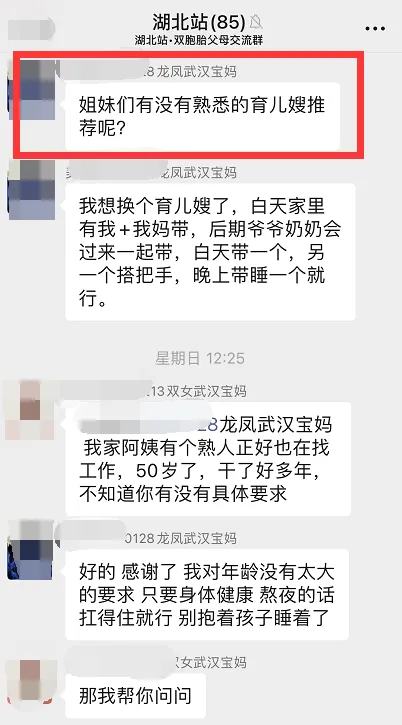
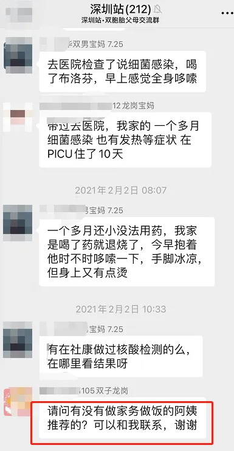
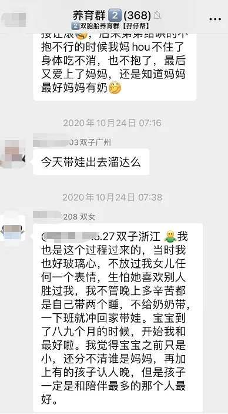

孖仔帮
公众号ID：twinsbang
关注
文|圆圈妈
网图|侵删
#先插播一则群通知#第7期双胞胎跳蚤市场群已开放，公号输入“赶集7”，扫码即可入群。
这是牛年的第一波赶集，有需要淘换处理母婴闲置物品的小伙伴们快来吧，名额有限哦！
还记得去年大火的综艺节目《乘风破浪的姐姐》张雨绮吗？从来不看综艺的我，趁着春节假期回看了下，瞬间被她圈粉了。
穿着紧身开叉长裙，性感冷艳，霸气侧漏的她脸上永远都是老娘不好惹的样子。
就是这样的她，竟然是一位龙凤胎妈妈！
俩娃已经2岁了。
再看看自己，87年老母亲，家有双胞胎儿子5岁，还未油腻，已然衰老！
果然明星和路人的区别，差的不止一个牛郎与织女的距离。人家姐姐那叫T台秀中乘风破浪，咱这叫屎尿屁中摸滚带爬。
我只能说，不是所有双胞胎妈妈都是张雨绮，而是所有双胞胎妈妈，但凡想要在事业上乘风破浪都会面临一个巨大的挑战：上班了，俩娃怎么办？谁来带？
近日咱社群又哀嚎声一片，不断有职场妈妈咨询找保姆哪家强，跪求靠谱月嫂推荐。
左右滑动查看更多
想起6年前的自己，也是个职场妈妈，两儿子才半岁，没人愿意带，差点被迫离职。
职场妈妈的身不由己和苦苦挣扎，只有经历过的人才能道出其中的不甘，不愿，不舍，不忍...
关注孖仔帮的老粉都看出来了，我和两儿子的亲子关系很铁，很多人问我这是怎么做到的，其实不是因为我现在当全职妈妈后日夜陪伴的功劳，而是得益于当年娃儿们还小，我还在职场时攒下来的基础。
重返职场的双胞胎妈妈，一边工作一边陪娃，一边过上多姿多彩的小日子，并不是想想而已，而是确确实实可以实现的。
今天这篇来分享，谈不上经验，只是根据个人的亲身体会，给出一点小贴士，希望能给即将去职场乘风破浪的你一个定心丸。
既然做出选择，那就洒脱点！
几乎每个生完孩子的女人都有一个挣扎期，工作or不工作，一边想工作，不想与社会脱节；一边不想工作，不想错过孩子成长的每一个瞬间。
当年，我经历这段挣扎期时也是痛苦万分，看着嗷嗷待哺的两个娃，总是割舍不下，给谁带都不愿意，唯有自己亲自带才放心，巴不得把他们俩揣口袋里去上班。
后来发现，纯粹是我想多了。
不会认人，只会哭和睡的小婴儿，主要需求的是安全健康营养均衡的奶水or配方奶和昂贵不漏尿不红屁股的尿不湿，而不是一个天天在家纠结挣扎满脸愁容的妈妈。
最后矛盾了几个来回，终究败给了贫穷，屁颠上班去赚奶粉钱。
人生最困难的不是努力，而是做出选择！既然做出回归职场的决定，那剩下的就兵来将挡，水来土掩吧。
不管你多不忍心，多不舍得把孩子交给他人照顾，首先在心态上就要彻底放手，让主要照顾双胞胎的人说了算，可以提建议，但要求别太高，只需抓大放小，守住大方向即可。
请务必休息好，除非天塌下来
白天上班累了一天，晚上还要搞两个娃的吃喝拉撒睡，最惨的是起来喂奶，一个晚上要折腾四五次，运气好一点还能眯一会儿，要是遇到俩娃特别闹，几乎整晚都是在喂奶哄睡中度过；晚上睡不好，上班两眼无神无精打采，没有工作热情....
以上场景，职场妈妈一定很熟悉，我一度也如此，就在双胞胎出生的第一年里，结果就是：工作效率低，看数字会重影，老是出错，几度被坐冷板凳。
当妈的头一年经常会有万念俱灰的感觉，我认为，睡眠不好是最大的始作俑者，经常拼凑式睡眠的妈妈，对睡眠的饥渴远远大于对为母则刚这句话100%的笃信。
去他大爷的【为母则刚】，就问你，天天睡不好的妈妈怎么刚？刚给谁看？
请不惜一切代价换一个整夜觉，特别是双胞胎出生的第一年，花点大钱请个靠谱的育儿嫂，精心照料的同时也顺势瞅准时机调整两宝宝的睡眠习惯；若有老人家帮忙带，那就卸下防备，放心地把娃交给家人，遇到鸡毛蒜皮的事，只能拉出来，不能吐出来。
爱孩子，来日方长；爱生活，慢工出细活；唯有爱自己，刻不容缓，而爱自己最简单粗暴的方式就是，去他的屎尿屁，老娘要睡一个整夜觉。
不必纠结带一个睡还是带两个睡
我们双胞胎妈妈经常笑称，和单胎妈妈很难做朋友，聊育儿永远谈不到点子上，友情的小船说翻就翻。
大概是因为单胎妈妈永远无法体会到，每天晚上都要为带双胞胎睡觉的问题而纠结那种挣扎：带一个睡还是带两个一起睡？只带一个睡会不会对另一个不公平？带两个睡太累，每隔一周轮流带一个睡，是否可行？
在这个问题上，我是鸡血激进派。
白天忙工作没时间带娃，与孩子们生疏，担心两块亲骨肉不跟自己亲了，眼看着第一次开口说话，喊的是奶奶，不是妈妈，那种滋味，真是锥心刺骨的心酸。
听说带娃一起睡可以增进亲子关系，所以不管上班多累，我都坚持晚上带他们俩睡，特别珍惜晚上跟他们相处的时间，哪怕他们整晚只是一个劲地喝奶，吐奶，哭啊闹啊，不肯睡啊...把人逼得想原地爆炸，我都觉得这是一种宠幸啊。
心理上宽慰了，没那么愧疚了，但是身体上却撑不住了，经常上班昏昏欲睡，下班带娃也力不从心，腰酸背痛，头晕眼花，感冒起来没完没了。
以上做法，除非自身有受虐倾向，不然...这种得不偿失的行为不推荐。职场妈妈在带双胞胎睡觉的问题上，请以不影响白天的工作为准，抓住这个大方向后，就不要再去纠结其他细节了。
如果你身强力壮，精力充沛，带俩娃睡自有一套，且碰巧遇到两个天使宝宝，又丝毫不影响你的工作热情，那就行动吧，大神！只是别太逞强了。
如果能力有限只能带一个睡，担心对另外一个娃不公平，那就甘愿接受灵魂的拷问吧，小宝宝很记仇，跟谁睡，自然会跟带睡的人更亲近，更依赖些，但也很直接，平日里更多的陪伴，很快就能重新获取他们的信任。
毕竟，血浓于水啊！曾经一个身体，三颗心跳的经历，可不是玩虚的。
如果带一个娃睡都搞不定，那就说服自己暂时六亲不认吧，放宽心，砸点钱，把双胞胎交给老人或阿姨带睡吧。
如果你哪天又母爱爆表，看不惯婆婆带着俩娃睡，左拥右抱，又亲又啃，又想尝试一人带俩娃睡，那来我们双胞胎养育群取经吧！
一人带俩娃睡，亲喂瓶喂哄娃抱睡...都需要点技巧和神器，这其中的奥秘，唯有过来人才能道破天机。
每个初为双胞胎妈妈的女人，都会经历一段跌跌撞撞磕磕碰碰的窘境，幸运的是，我们很快就能找到适合自己和家庭的平衡点，逐渐适应这鸡飞狗跳的节奏，小日子也能慢慢步入正轨。
《乘风破浪的姐姐》这档综艺之所以大爆，大概率是因为里面的姐姐们很多都已经当妈了，都很积极向上，相当励志，让人看着也跟着鸡血沸腾。
我们虽然没有明星的光环和财富，但可以学习她们的心态，活出漂亮的自己。
最后，愿职场双胞胎妈妈，即便成不了乘风破浪的姐姐，也要有张雨绮的范儿，又A又飒，在家庭中游刃有余，在职场上叱咤风云。
-END-
今日互动话题
#职场双胞胎妈妈必答题#
重返职场，你会坚持带双胞胎一起睡吗？？
评论区聊一聊呗！
微信公众号：孖仔帮
ID : twinsbang
专注双胞胎孕育，养育，教育经验分享
扫码关注我们
点一下你会更好看耶






